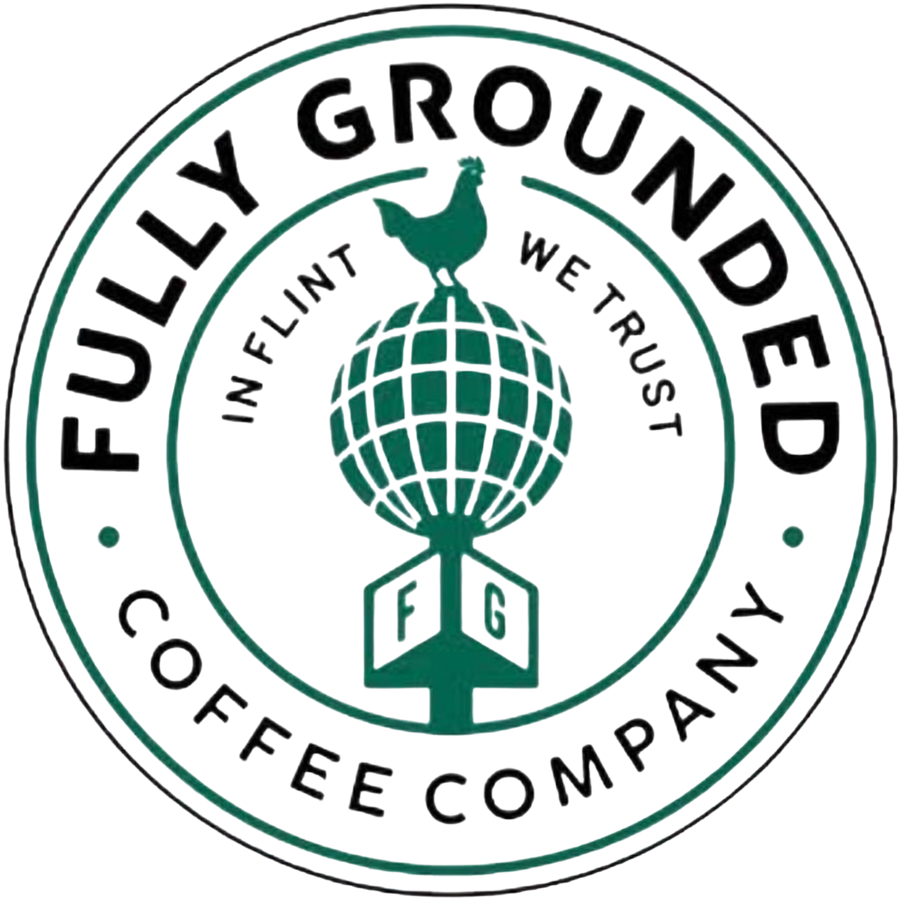

Our Coffee Story

Fully Grounded Coffee Co. was designed as a simple coffee house website that shows how a coffee business can improve search visibility with metadata, clear headings, and descriptive content. This is a real coffee shop located in the Flint Farmer's Market; however, some data was created as I was unsure of their direct stance. This data includes any content regarding what they believe makes their coffee standout and speciifcs regarding their menu.
What Makes Our Coffee Stand Out
Handcrafted Drinks
Each coffee drink is made to order by one of our several dedicated barristas.
Small Owned Business
Directly supports the Flint community!